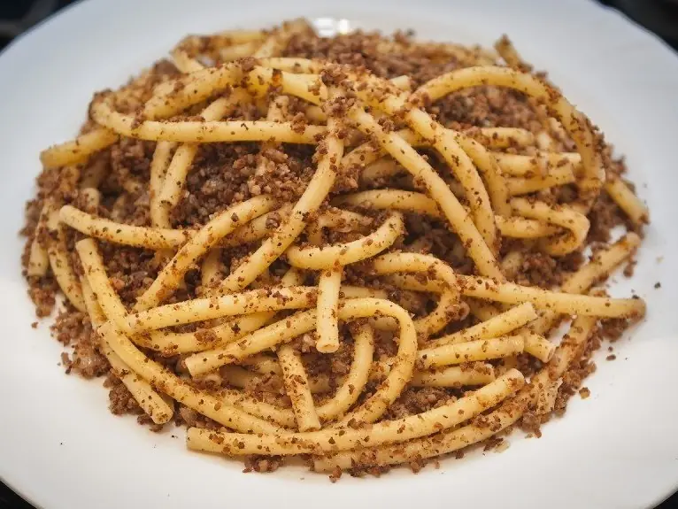

Фото: Zuzu172, CC BY-SA 4.0

Макароны по-флотски
Макароны с обжаренным фаршем и луком, ужин из простых продуктов за полчаса
35 мин4 порц.719 ккал на порциюБ 33 · Ж 31 · У 75Русская кухня
Продукты на 4 порц.
- Макароны400 г
- Говяжий фарш500 г
- Лук репчатый2 шт
- Растительное масло1,5 ст. л.
- Вода3000 мл
- Соль1 ст. л.
- Перец чёрный молотый2 щеп.
Как готовить
- Поставьте кипятить воду для макарон.
- Лук нарежьте мелким кубиком и обжарьте на масле на среднем огне 5 минут до мягкости.
- Добавьте фарш, разбивайте его лопаткой на мелкие кусочки. Жарьте 10-12 минут, пока фарш не потеряет розовый цвет и не начнёт подрумяниваться.
- Посолите фарш 1 ч. л. соли и поперчите.
- Остальную соль бросьте в кипящую воду, всыпьте макароны и варите по времени на пачке минус 1 минуту. Откиньте на дуршлаг, оставив 100 мл воды.
- Выложите макароны к фаршу, влейте оставленную воду и прогрейте всё вместе 2 минуты, перемешивая.
Совет. Немного воды от варки макарон связывает фарш с макаронами, и блюдо не получается сухим. Лишнее масло не нужно.